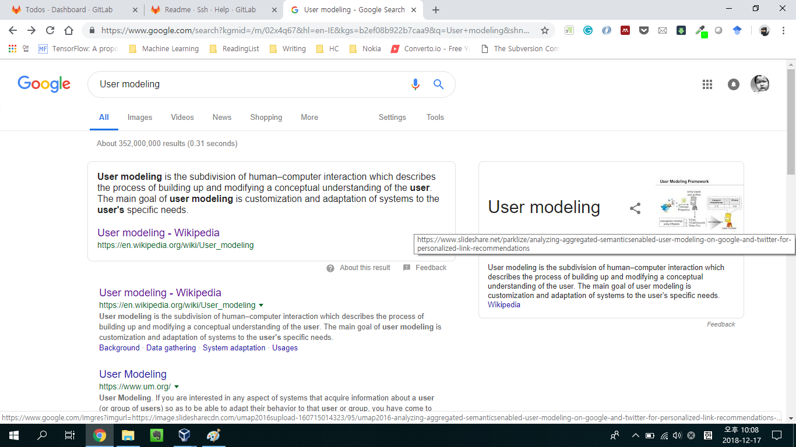
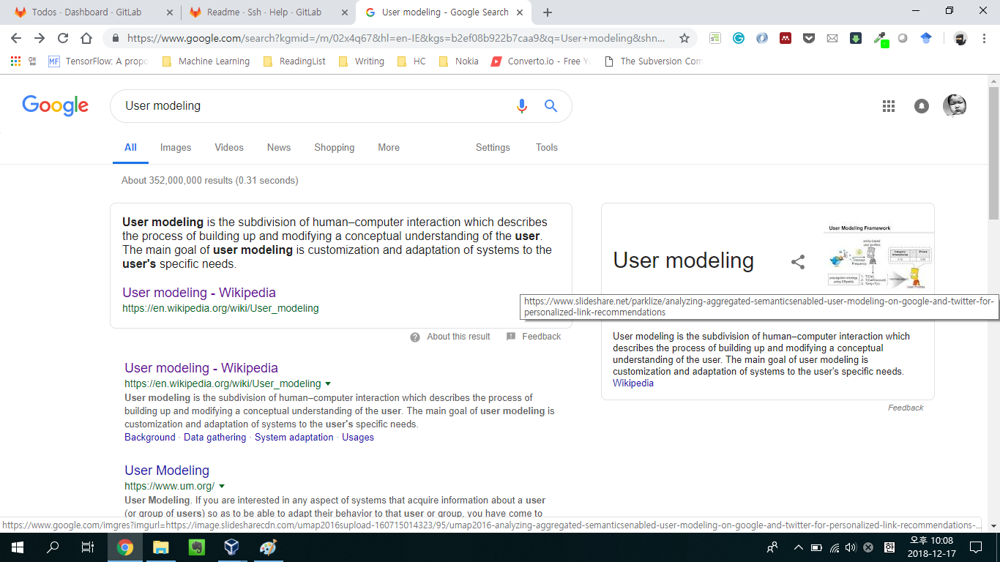

My User Modeling Slide in the Google Knowledge Graph
It is interesting to find out that my slide on the slideshare shows up on the Google Knowledge Graph when searching the term user modeling on Google.

It is interesting to find out that my slide on the slideshare shows up on the Google Knowledge Graph when searching the term user modeling on Google.
